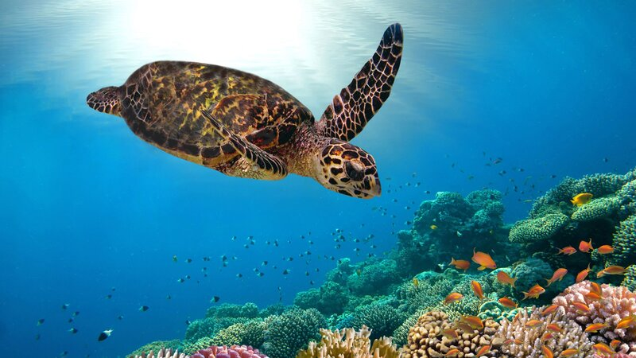

Een paradijselijke duikbestemming in de Indische Oceaan: dat zijn de Malediven! Vakantie vieren in een exclusieve, andere wereld doe je hier. Het is de droombestemming voor een geweldige strand en duik vakantie. Je drinkt cocktails op het strand, dineert tijdens zonsondergang en zwemt met roggen en haaien.

Tijdens u verblijf slaapt u in een ven onze waterbungalows. Deze zijn ontworpen om u het beste van comfort en weelde te bieden, met ruime interieurs en adembenemende uitzichten op de oceaan. Laat u betoveren door de prachtige zonsopgangen en zonsondergangen vanaf uw eigen privéterras, terwijl u geniet van de zachte bries en het rustgevende geluid van kabbelende golven.
Met een gemiddelde temperatuur van 30°C gedurende het hele jaar, bieden de Malediven het perfecte klimaat voor eindeloze dagen van zonnebaden en verfrissende duiken in de kristalheldere zee.
Bekijk hier de actuele weersvoorspelling op de Malediven
De onderwaterwereld van de Malediven is een magische plek waar de kleurrijke pracht van de oceaan tot leven komt. Duik in de azuurblauwe wateren en laat je betoveren door de schitterende koraalriffen, waar een overvloed aan exotische vissen en zeeleven wacht om ontdekt te worden. Zwem tussen sierlijke manta's, nieuwsgierige schildpadden en levendige rifhaaien, terwijl je wordt omringd door een spectrum van kleuren die alleen Moeder Natuur kan creëren. Of je nu een ervaren duiker bent of voor het eerst een snorkel opzet, de Malediven bieden een onvergetelijke onderwaterervaring.
Ontdek de magie van de Malediven vanuit het comfort van onze exclusieve waterbungalows. Boek vandaag nog uw verblijf en laat ons uw droomvakantie werkelijkheid maken.